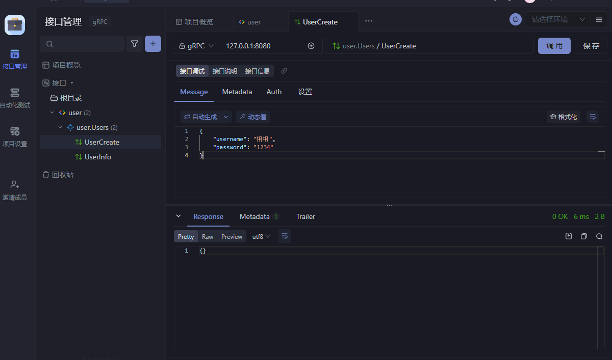
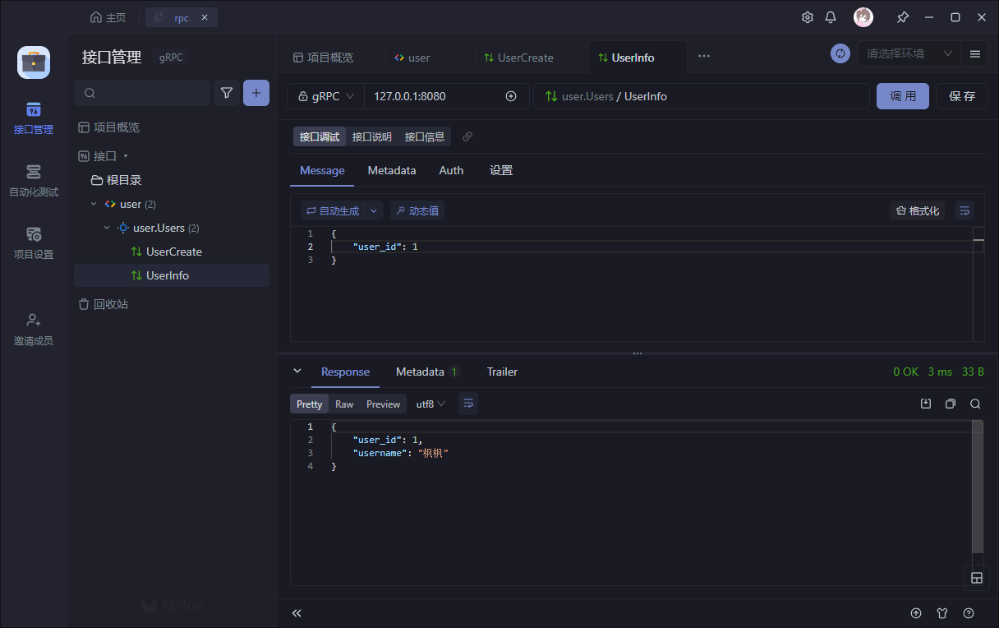
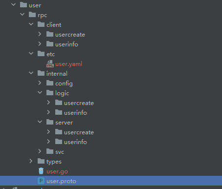

go-zero RPC：分组与服务调用
proto文件的编写可以参考我之前讲解grpc的教程
单rpc服务模式
我们编写一个proto文件
提供两个服务，一个是获取用户信息方法，一个是用户添加的方法
user.proto
Protocol Buffers复制代码
syntax = "proto3";
package user;
option go_package = "./user";
message UserInfoRequest {
uint32 user_id = 1;
}
message UserInfoResponse {
uint32 user_id = 1;
string username = 2;
}
message UserCreateRequest {
string username = 1;
string password = 2;
}
message UserCreateResponse {
}
service Users {
rpc UserInfo(UserInfoRequest) returns(UserInfoResponse);
rpc UserCreate(UserCreateRequest) returns(UserCreateResponse);
}
// goctl rpc protoc user.proto --go_out=./types --go-grpc_out=./types --zrpc_out=.
和传统grpc不一样的是，go-zero里面的proto文件不能外部引入message
goctl rpc protoc user.proto --go_out=./types --go-grpc_out=./types --zrpc_out=.
protoc ...：只生成标准 Protobuf 数据结构和标准 gRPC 客户端/服务端桩代码。
goctl rpc protoc ...：先生成同样的 Protobuf/gRPC 代码，再额外生成一套可运行的 go-zero RPC 服务工程骨架。
在logic种完善对应的逻辑
Go复制代码
func (l *UserInfoLogic) UserInfo(in *user.UserInfoRequest) (*user.UserInfoResponse, error) {
fmt.Println(in.UserId)
return &user.UserInfoResponse{
UserId: in.UserId,
Username: "枫枫",
}, nil
}
Go复制代码
func (l *UserCreateLogic) UserCreate(in *user.UserCreateRequest) (*user.UserCreateResponse, error) {
fmt.Println(in.Username, in.Password)
return &user.UserCreateResponse{}, nil
}
使用apifox调用grpc


服务分组
默认情况下，一个proto文件里面只能有一个service
有多个的话，转换会报错
如果一个rpc服务，有很多方法，转换之后的目录就很不直观了
我们可以在转换的时候，使用-m参数指定服务分组
Protocol Buffers复制代码
syntax = "proto3";
package user;
option go_package = "./user";
message UserInfoRequest {
uint32 user_id = 1;
}
message UserInfoResponse {
uint32 user_id = 1;
string username = 2;
}
message UserCreateRequest {
string username = 1;
string password = 2;
}
message UserCreateResponse {
}
service UserCreate {
rpc UserCreate(UserCreateRequest) returns(UserCreateResponse);
}
service UserInfo {
rpc UserInfo(UserInfoRequest) returns(UserInfoResponse);
}
// goctl rpc protoc user.proto --go_out=./types --go-grpc_out=./types --zrpc_out=. -m

结合gorm
Protocol Buffers复制代码
syntax = "proto3";
package user;
option go_package = "./user";
message UserInfoRequest {
uint32 user_id = 1;
}
message UserInfoResponse {
uint32 user_id = 1;
string username = 2;
}
message UserCreateRequest {
string username = 1;
string password = 2;
}
message UserCreateResponse {
uint32 user_id = 1;
string err = 2;
}
service user{
rpc UserInfo(UserInfoRequest)returns(UserInfoResponse);
rpc UserCreate(UserCreateRequest)returns(UserCreateResponse);
}
// goctl rpc protoc user.proto --go_out=./types --go-grpc_out=./types --zrpc_out=.
models定义
rpc_study/user_gorm/models/user_model.go
Go复制代码
package models
import "gorm.io/gorm"
type UserModel struct {
gorm.Model
Username string `gorm:"size:32" json:"username"`
Password string `gorm:"size:64" json:"password"`
}
1 . 配置文件，添加mysql的相关配置
rpc_study/user_gorm/rpc/etc/user.yaml
YAML复制代码
Name: user.rpc
ListenOn: 0.0.0.0:8080
Etcd:
Hosts:
- 127.0.0.1:2379
Key: user.rpc
Mysql:
DataSource: root:root@tcp(127.0.0.1:3307)/zero_db?charset=utf8mb4&parseTime=True&loc=
2 填写对应的配置映射
rpc_study/user_gorm/rpc/internal/config/config.go
Go复制代码
package config
import "github.com/zeromicro/go-zero/zrpc"
type Config struct {
zrpc.RpcServerConf
Mysql struct {
DataSource string
}
}
3 在服务依赖的地方，进入注入
rpc_study/user_gorm/rpc/internal/svc/servicecontext.go
Go复制代码
package svc
import (
"gorm.io/gorm"
"zero_study/common/init_gorm"
"zero_study/rpc_study/user_gorm/models"
"zero_study/rpc_study/user_gorm/rpc/internal/config"
)
type ServiceContext struct {
Config config.Config
DB *gorm.DB
}
func NewServiceContext(c config.Config) *ServiceContext {
db := init_gorm.InitGorm(c.Mysql.DataSource)
db.AutoMigrate(&models.UserModel{})
return &ServiceContext{
Config: c,
DB: db,
}
}
func InitGorm1(MysqlDataSource string) *gorm.DB {
db, err := gorm.Open(mysql.Open(MysqlDataSource), &gorm.Config{})
if err != nil {
panic("connect fail" + err.Error())
}
fmt.Println("success")
db.AutoMigrate(&models.UserModel{})
return db
}
创建逻辑
Go复制代码
func (l *UserCreateLogic) UserCreate(in *user.UserCreateRequest) (pd *user.UserCreateResponse, err error) {
pd = new(user.UserCreateResponse)
var model models.UserModel
err = l.svcCtx.DB.Take(&model, "username = ?", in.Username).Error
if err == nil {
pd.Err = "该用户名已存在"
return
}
model = models.UserModel{
Username: in.Username,
Password: in.Password,
}
err = l.svcCtx.DB.Create(&model).Error
if err != nil {
logx.Error(err)
pd.Err = err.Error()
err = nil
return
}
pd.UserId = uint32(model.ID)
return
}
查询逻辑
Go复制代码
func (l *UserInfoLogic) UserInfo(in *user.UserInfoRequest) (*user.UserInfoResponse, error) {
var model models.UserModel
err := l.svcCtx.DB.Take(&model, in.UserId).Error
if err != nil {
return nil, errors.New("用户不存在")
}
return &user.UserInfoResponse{
UserId: uint32(model.ID),
Username: model.Username,
}, nil
}
结合api
rpc 层面可以直接完全使用之前使用gorm的全部代码 ;
api
Go复制代码
type UserCreateRequest {
Username string `json:"username"`
Password string `json:"password"`
}
type UserInfoRequest {
ID uint `path:"id"`
}
type UserInfoResponse {
UserId uint `json:"user_id"`
Username string `json:"username"`
}
@server(
prefix: /api/users
)
//这里使用需要使用 : 的路径表示必须要传回数值 ;
service users {
@handler userInfo
get /:id (UserInfoRequest) returns (UserInfoResponse)
@handler userCreate
post / (UserCreateRequest) returns (string )
}
// goctl api go -api user.api -dir .
在配置文件里面填写rpc服务的key
YAML复制代码
Name: users
Host: 0.0.0.0
Port: 8888
UserRpc:
Etcd:
Hosts:
- 127.0.0.1:2379
Key: user.rpc
填写配置文件
Go复制代码
package config
import (
"github.com/zeromicro/go-zero/rest"
"github.com/zeromicro/go-zero/zrpc"
)
type Config struct {
rest.RestConf
//属于rpc中的一个接口,内部定义的一些可以调用的方法;
UserRpc zrpc.RpcClientConf
}
依赖注入，初始化rpc的客户端
Go复制代码
package svc
import (
"github.com/zeromicro/go-zero/zrpc"
"zero_study/rpc_study/user_api_rpc/api/internal/config"
"zero_study/rpc_study/user_api_rpc/rpc/userclient"
)
type ServiceContext struct {
Config config.Config
UserRpc userclient.User
}
func NewServiceContext(c config.Config) *ServiceContext {
return &ServiceContext{
Config: c,
UserRpc: userclient.NewUser(zrpc.MustNewClient(c.UserRpc)),
}
}
创建用户
Go复制代码
func (l *UserCreateLogic) UserCreate(req *types.UserCreateRequest) (resp string, err error) {
response, err := l.svcCtx.UserRpc.UserCreate(l.ctx, &user.UserCreateRequest{
Username: req.Username,
Password: req.Password,
})
if err != nil {
return "", err
}
if response.Err != "" {
return "", errors.New(response.Err)
}
return
}
用户信息
Go复制代码
func (l *UserInfoLogic) UserInfo(req *types.UserInfoRequest) (resp *types.UserInfoResponse, err error) {
response, err := l.svcCtx.UserRpc.UserInfo(l.ctx, &user.UserInfoRequest{
UserId: uint32(req.ID),
})
if err != nil {
return nil, err
}
return &types.UserInfoResponse{UserId: uint(response.UserId), Username: response.Username}, nil
}
参考文档
服务分组 https://go-zero.dev/docs/tutorials/proto/services/group